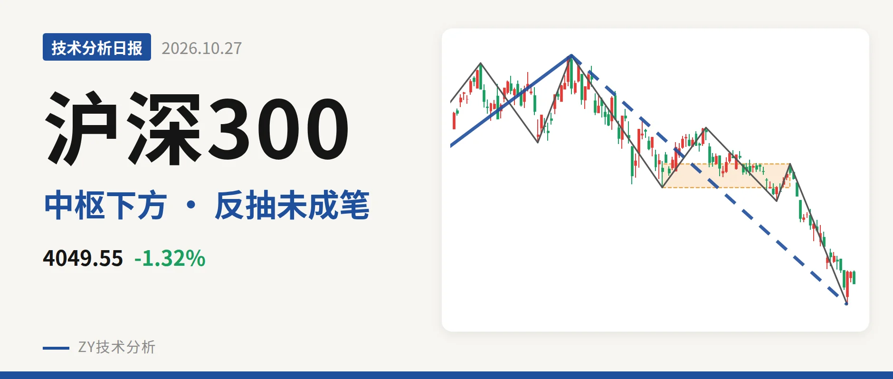
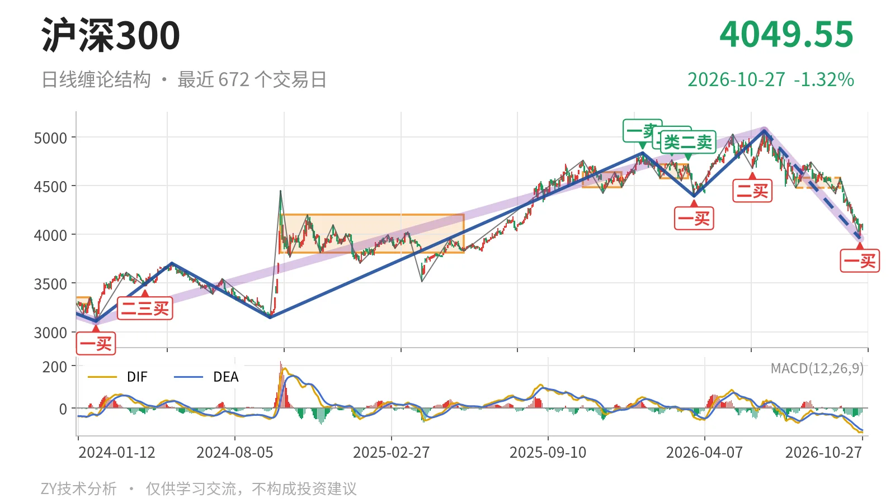
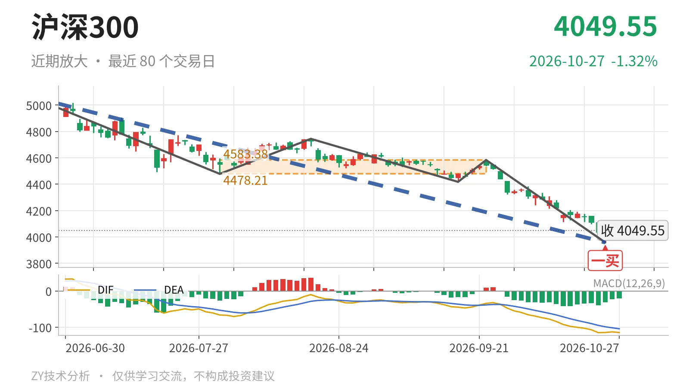

沪深300｜反抽未成笔，4478点成反压

最近日线中枢 4478.21—4583.38点，收盘位于中枢之下
一句话：沪深300日线下跌线段延续，反抽未成笔，结构偏弱
📉 走势结构：上涨段未破坏，日线下跌段在延续
2024年2月2日至2026年6月23日的上涨走势尚未走完，这段从3108.35点到5064.27点、上涨约63%的走势结构没有被破坏，但内部正在走6月23日以来的日线下跌段。该下跌段由5064.27点回到3958.14点，跌约21.8%，日线线段仍在延续，内含5笔。10月26日至27日只有两根K线，最高4110.00点，未构成日线上涨笔，只能看作下跌线段里的弱反抽。当前是更大级别上涨中的日线回落，不是独立下跌趋势。

📍 中枢位置：收盘在最近中枢下方，中枢下移
7月30日至9月22日的日线笔中枢尚未完成，区间4478.21—4583.38点。最新收盘4049.55点低于下沿约9.6%，已经跌出中枢下沿。与2月3日至3月17日中枢（4578.21—4720.86点）相比，下沿从4578点下移到4478点，中枢重心在降低。收盘未站回4478点前，日线结构都处在中枢下方运行，属于离开段。
🧭 买卖点：10月23日一买是笔结束点，反抽未成笔
日线笔级别上，10月23日的3958.14点一买已经出现，对应9月22日至10月23日的下跌笔结束。其后10月26日至27日最高4110.00点，尚未形成新的上涨笔，所以这个一买暂时只是该笔结束后的弱反抽。若反抽不能拉回4478点上方，它无法改变日线线段下跌结构；若后续跌破3958点，则这个一买将只对应更小级别。上方1月13日一卖、2月25日二卖、3月17日类二卖一个比一个低，卖压结构未解除。

📊 背驰：绿柱面积缩小，DIF新低，无标准底背驰
比较同向下跌笔：6月23日至7月30日下跌笔绿柱面积650，DIF低点-66.5；9月22日至10月23日下跌笔绿柱面积494，DIF低点-115.1，价格创3958.14点新低。绿柱面积由650缩到494，但DIF低点继续下移，这不是标准的新低不新弱，只是绿柱面积背离。10月23日的一买没有标准绿柱面积与DIF低点双背驰配合。最新日线MACD柱为-20.9，DIF与DEA均位于零轴下方，空头结构未改。
🧱 关键位置：看4478点反压与3958点得失
反抽若回不到4478点上方，结构上构成日线级别三卖，6月23日以来的下跌线段继续。重新站上4478点，则最近中枢扩展的可能更高，下跌更可能只是中枢震荡，而非单边离开。下方3958点是10月23日一买低点，一旦失守，该一买只对应更小级别，日线下跌笔仍将延续。当前结构偏弱，主因是收盘在中枢下方、反抽未成笔、同向下跌笔无标准底背驰，三者都没有给出转折信号。
⚠️ 本文为基于公开行情数据的缠论技术结构记录，由程序自动计算并生成，仅供学习交流，不构成任何投资建议。市场有风险，投资需谨慎。